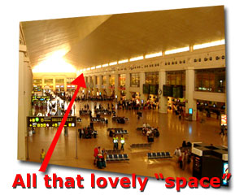
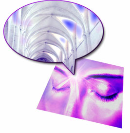
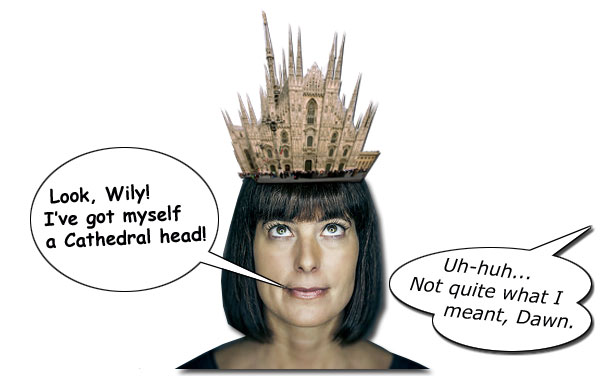

WilyWalnut.com
Meet the Genius in YOUR Brain!
Wily Walnut's BRAIN SQUEEZER
Newsletter The man's head lay on the ground. Separated from his body. Which was slumped and chained to a whipping post. A shocked crowd of onlookers stared in horror. An unearthly glowing light surrounded the decapitated head. ...The painting was huge. Depicting the beheading of St John the Baptist. A dark and grisly scene from the Catholic faith. And it hung there in the Cathedral of Malaga, in Southern Spain. I like to visit the sacred spaces of all kinds of faiths. Churches, temples, mosques. tombs. They are usually built according to special guidelines that help to define a portion of "space" in a way that makes us super conscious of it and imbues it with significance. You don't have to visit a religious building to get a sense of sacred space. It can come in nature. A quiet grove of trees with the sunlight streaming down into it. A peaceful cove where the waves kiss the shore like a mother kissing a baby goodnight. Or a mountain top vista where your eyes can scan far and wide, your spirit flying into all that space.  Of course, it can occur in your own home. If you have a particular place for reflection, prayer, meditation, or deep thought, one can tune into and feel the ambience, the depth, the resonance of that contemplation. It is as though the air is seared with the power and presence of your awareness, your stillness, your penetrating gaze.  I had such an experience this morning. Listening to a brain entrainment track as a meditation aid. As the audio progressed, so my awareness of inner space increased. To the point, where the experience was similar to standing alone in the middle of a cathedral. With the walls far to the sides, the huge vaulted and domed roof far above, the altar far ahead, the entrance doors far behind. Imagine containing a huge building within you. A building that defines an immense space, a vacuum, which is pulling and inviting something special and significant into it. For your creativity, I recommend developing your inner space, building the inner cathedral, if you will. An inner temple. A place to worship and rejoice in inspiration, fresh ideas, and profound insight, wisdom, and understanding. The sacred. Build An Inner Cathedral In Your MindInstructions: 1. Take a time out to visit a special cathedral, temple, mosque, shrine, historical place of worship, or inspiring (and big) architecturally beautiful building. Soak in that sense of size, vastness and contained space. If it is a religious building, try to get a sense of all the people that have worshipped there. Feel the vibration, the echo of their love and prayer. If it is a secular building, sense the history, the brilliance of the mind of the designer, the purpose and intent of the building, the thought power behind its manifestation in this world. 2. Find a pocket of nature that inspires you. If you live in a city, where nature has been all but obliterated, look to the small... the flower growing between the crack in the paving... or, better yet, to the sky above. Let your eyes penetrate deep into the blue sky. If there are clouds, get a sense of the space between you and the clouds. Try to focus on the space between you and the cloud. You may see the sparkles of prana, the vital energy of the Universe, flittering across your vision. 3. Develop sacred space in your home. De-clutter. Simplify. Or at least tidy up, clean surfaces, push chairs back against the walls, and maximise the sense of space in one of your rooms, Make it the room where you will think, create, and meditate. 4. Re-use the same room, the same part of the room, the same chair for your meditation, contemplation, and thought sessions. Anchor your deepened states to that position. Develop a sense of presence, the vibration of heightened awareness in that spot. 5. When meditating, you need to be still. To enhance a sense of space within, and to help with that stilling process, I imagine taking a pebble and dropping it down through the top of my head and watching it fall deep inside... like dropping a pebble down a well that goes deep into the earth. I often use a meditation enhancement aid such as a brain entrainment audio program.** ** My personal favourite and one I recommend is the Brain Evolution System. (You can read a comprehensive 6-month user review of that at www.brainevolutionsystem.net or visit directly at: http://www.thebrainevolutionsystem.com). 6. To develop space within, you need to think about space. Why should you do that? Why is emptiness significant? Because it enables you to become more aware. More aware of potential. More aware of power. More aware of Presence. It gives birthing room for fresh ideas. It provides a home for Wisdom to roost. It gives Insight a dwelling to frequent. Think about and become more aware of your Space and build that inner cathedral for your creativity and purpose. I hope this has been a great year for you. May the next twelve months be ...scintillating! Your friend, 
| ||
|

"Unleash Your Inner Genius For Creativity & Innovation!" Copyright 2001-2015 WilyWalnut.com SITE MAP